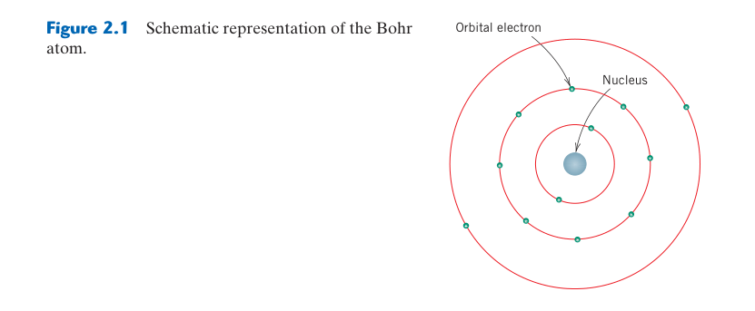
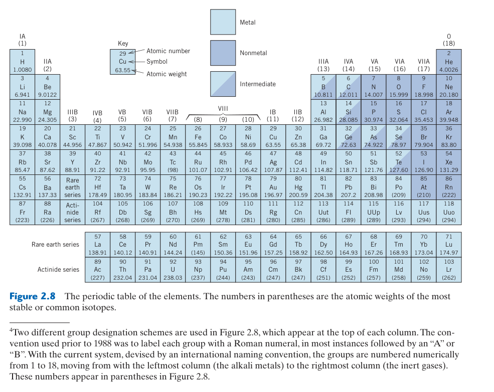
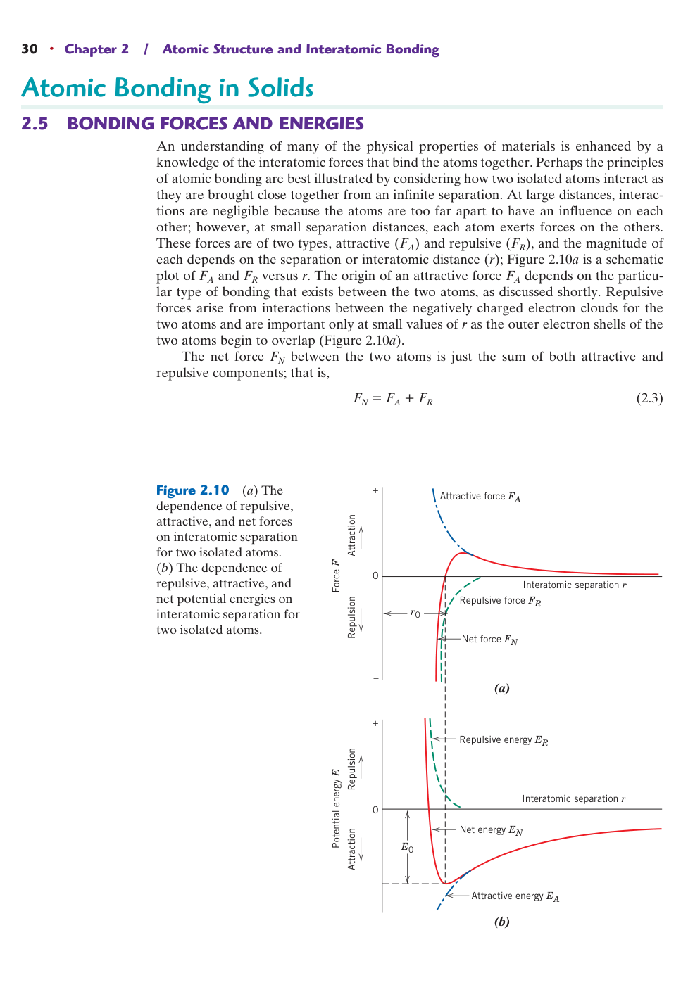
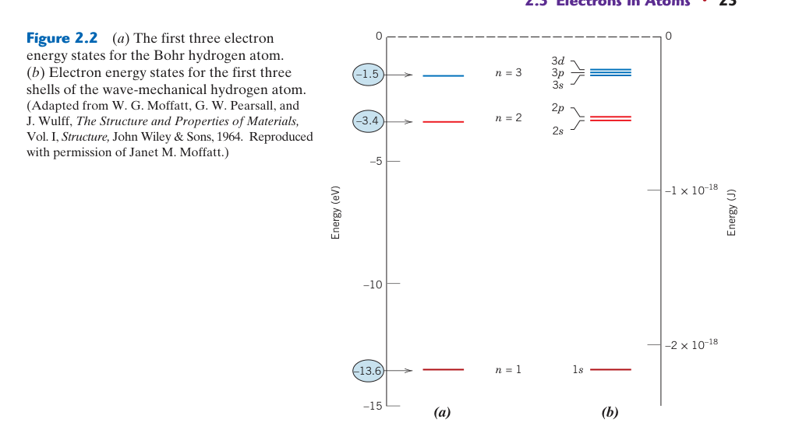
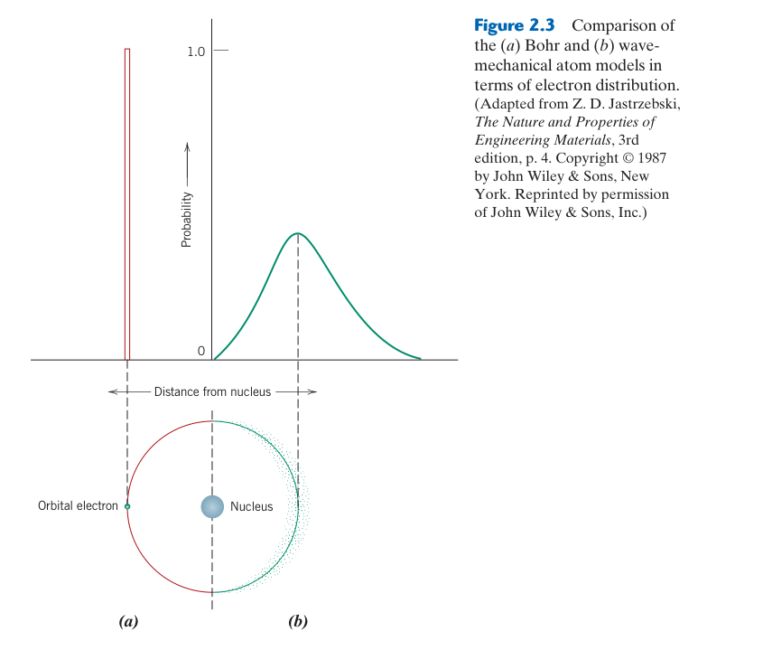
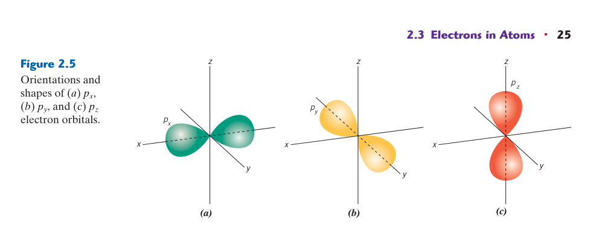
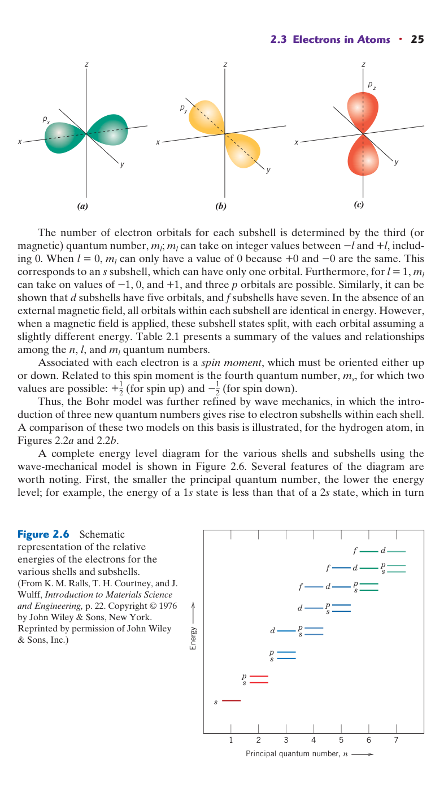
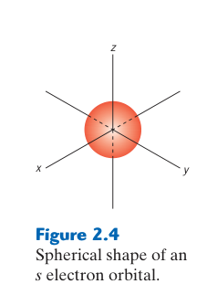
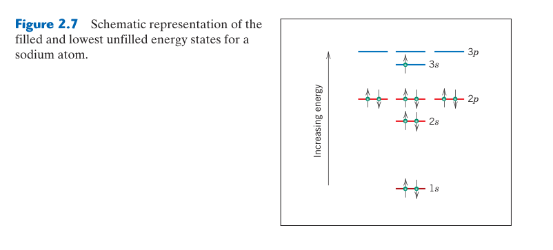

第 2 章 原子結構與原子間鍵結
本章預覽
核心問題
為什麼鑽石是自然界最硬的物質之一，而石墨（同樣是純碳）卻又軟又滑？為什麼金屬導電而陶瓷絕緣？答案不在於「是什麼元素」，而在於原子之間如何鍵結。本章建立原子尺度上的基本語言——從量子數到化學鍵——為後續所有章節奠定理論基礎。
10 個關鍵概念
- 波–粒二象性：電子既不是單純的粒子也不是單純的波——波動力學模型是現代理解的基礎
- 量子數：$n, l, m_l, m_s$ 四個量子數完整描述原子中每個電子的狀態
- Pauli 不相容原理：每個電子態最多容納兩個自旋相反的電子
- 電子組態：電子由低能量往高能量填入——價電子決定化學行為
- 電負度：原子吸引電子的傾向，決定鍵結的離子性/共價性比例
- 離子鍵：電子轉移＋庫侖吸引力——典型於陶瓷（如 NaCl, MgO）
- 共價鍵：電子共用＋方向性——典型於高分子與半導體（如鑽石、Si）
- 金屬鍵：價電子形成「電子海」——非方向性、導電導熱、具延性
- 凡得瓦力：偶極–偶極弱吸引力——存在於所有原子之間，主導分子間作用
- 混合鍵性：真實材料很少是單一純鍵型——%IC 公式量化離子性比例
🧭 本章推理地圖
- 原子序決定元素身分（§2.1）；電子依能量與量子規則排列（§2.3）→ 形成特定的價電子組態（§2.3）。
- 價電子組態隨原子序週期性重複（§2.3）→ 產生電負度、原子半徑與價態趨勢（§2.4）。
- 原子為降低系統能量而重新分配或共享價電子（§2.5）→ 形成主要鍵與二次鍵（§2.6–§2.7）。
- 鍵結的能量深度控制熔點與剛性（§2.5）；鍵結的方向性限制排列與變形方式（§2.6–§2.8）。
- 由「電子組態（§2.3）→ 鍵結（§2.6–§2.8）→ 材料家族（§2.10）」初步預測性質差異（補強專題）。
先備知識橋接
本章假設讀者具備高中化學基礎：知道原子由質子、中子、電子組成，了解電子殼層的基本概念。如果你對以下概念感到陌生，請先複習：
- 原子序（Z）= 質子數；質量數（A）= 質子數＋中子數
- 庫侖定律：$F = k \frac{q_1 q_2}{r^2}$——異性電荷相吸、同性相斥
- 能量守恆：系統趨向最低能量狀態——這解釋了為什麼原子會形成鍵結
對材料科學而言，本章最重要的收穫不是記住所有量子數規則，而是理解：不同鍵結類型 → 不同的電子行為 → 不同的巨觀性質。
2.1 原子結構的基本概念

每個原子由一個極小的原子核（由質子和中子組成）和環繞原子核運動的電子構成。原子核的直徑約為 $10^{-15}$ m，整個原子的直徑約 $10^{-10}$ m——原子核僅佔原子體積的約 $10^{-15}$（相當於一個彈珠放在足球場中央），但集中了原子 >99.9% 的質量。電子和質子帶電，電荷量為 $1.602 \times 10^{-19}$ C，電子為負、質子為正；中子不帶電。質子和中子的質量約為 $1.67 \times 10^{-27}$ kg，遠大於電子的 $9.11 \times 10^{-31}$ kg（質子質量約為電子的 1836 倍）。
| 粒子 | 電荷 (C) | 質量 (kg) | 在原子中的位置 |
|---|---|---|---|
| 質子 | $+1.602 \times 10^{-19}$ | $1.67 \times 10^{-27}$ | 原子核 |
| 中子 | 0 | $1.67 \times 10^{-27}$ | 原子核 |
| 電子 | $-1.602 \times 10^{-19}$ | $9.11 \times 10^{-31}$ | 環繞原子核 |
原子序（atomic number, $Z$）等於質子數——這是元素的「身分證」，決定了元素在週期表中的位置和所有化學性質。對於中性原子，電子數等於質子數。質量數（mass number, $A$）是質子數和中子數的總和（取整數），表示原子核中核子的總數。粗略的近似關係：$A \cong Z + N$（$N$ 為中子數）。
如果將氫原子的原子核放大到乒乓球大小（~4 cm），電子雲的邊界將在 ~400 m 之外——相當於四個足球場的距離。固體材料的「實體」主要是電磁力場，而非「物質」本身。兩個原子無法穿透彼此不是因為「撞到固體球」，而是因為電子雲之間的排斥力（Pauli 不相容原理 + 庫侖排斥）。
原子序決定元素身分，電子狀態決定化學行為
原子核中的質子數 $Z$ 是元素的身分證：只要 $Z=6$ 就是碳，$Z=26$ 就是鐵。中子數改變會形成同位素，電子數改變則形成離子。中性原子的電子數等於質子數；失去電子形成陽離子，得到電子形成陰離子。化學反應與材料鍵結幾乎都涉及外層電子重新分布，通常不改變原子核，因此元素身分保持不變。
原子的質量幾乎集中在極小的原子核，電子雲卻決定原子的有效尺寸。這種「質量與體積由不同部分主導」的結構很重要：材料的密度與原子量、原子堆積有關，而鍵長、鍵角與化學反應則由電子雲控制。工程材料中的原子不能被想像成有固定硬表面的實心球；硬球模型是描述堆積的近似，不代表電子雲真的有明確邊界。
離子電荷與整體電中性
離子化後，電子與質子數不再相等。例如 Mg 失去兩個價電子形成 Mg$^{2+}$，O 得到兩個電子形成 O$^{2-}$。巨觀材料必須維持近似電中性，因此 MgO 以 1:1 比例組合；Al$^{3+}$ 與 O$^{2-}$ 則需以 2:3 比例形成 Al$_2$O$_3$。這個最簡單的電荷平衡原則，後續會用來理解陶瓷化學式、點缺陷與摻雜補償。
原子尺度有多小？
典型原子直徑約為 $0.1$–$0.5$ nm。若以 0.25 nm 估算，1 mm 長度可排列約 $4\times10^6$ 個原子間距；一個肉眼可見的晶粒內便含有極大量原子。因此材料性質通常是龐大原子群的統計結果，少數原子的隨機波動不會直接左右巨觀尺寸，但缺陷若形成裂紋、晶界或連續傳輸路徑，就可能被尺度放大。
原子核尺寸約比原子小數萬倍，若把原子放大成體育場，原子核只像中央的一粒小物體，但承載幾乎全部質量。材料抗壓時表現出的「不可穿透」並不是因為原子充滿實體，而是電子雲重疊時產生的量子排斥與靜電作用。這也解釋了原子硬球圖是有用的幾何模型，卻不能被當成微型鋼珠。
📝 電中性練習：由離子價數寫化學式
Ca$^{2+}$ 與 F$^-$ 組合時，每個 Ca 需要兩個 F 才能中和，得到 CaF$_2$；Al$^{3+}$ 與 N$^{3-}$ 以 1:1 組合，得到 AlN。先找最小整數比例使正、負總電荷為零，再寫下標，不能把離子電荷直接照抄成同名下標。
原子核穩定性是另一套問題：質子間有庫侖排斥，需由強核力與適當中子／質子比維持。某些同位素不穩定會放射衰變，改變元素或核能狀態。這類核反應的能量尺度遠大於一般化學鍵結；材料受輻照時，放出的粒子還可能把晶格原子撞離位置，形成大量缺陷。
2.2 原子量、同位素與亞佛加厥數


同一元素可以有不同中子數的變體，稱為同位素（isotopes）——它們的化學性質幾乎相同（電子組態相同），但質量不同。例如碳有三種自然同位素：¹²C（6 質子+6 中子，豐度 ~98.9%）、¹³C（6 質子+7 中子，~1.1%）、¹⁴C（6 質子+8 中子，放射性，用於考古定年）。原子量（atomic weight）是自然同位素質量的加權平均——這就是為什麼原子量通常不是整數。例如氯的原子量是 35.45 amu，因為它是 ³⁵Cl（75%, 34.97 amu）和 ³⁷Cl（25%, 36.97 amu）的混合物。
📐 原子質量單位（amu）與莫耳
1 amu 定義為碳-12（¹²C）原子質量的 1/12。在此尺度下，質子和中子的質量略大於 1 amu。計算上極其方便的關係：1 amu/atom = 1 g/mol——例如鐵的原子量 55.85 amu/atom = 55.85 g/mol。一莫耳含有 $6.022 \times 10^{23}$（亞佛加厥數，Avogadro's number）個原子或分子。這個數字之所以是 $6.022 \times 10^{23}$，是因為它使「以克為單位的原子量」等於「1 莫耳原子的質量」。
📖 範例 2.1：計算鈰的平均原子量
鈰有四種自然同位素：¹³⁶Ce (0.185%, 135.907 amu)、¹³⁸Ce (0.251%, 137.906 amu)、¹⁴⁰Ce (88.450%, 139.905 amu)、¹⁴²Ce (11.114%, 141.909 amu)。
平均原子量 $A_M = \sum_i f_i A_i$，其中 $f_i$ 為豐度分數（百分比除以 100）：
$A_{\text{Ce}} = 0.00185 \times 135.907 + 0.00251 \times 137.906 + 0.88450 \times 139.905 + 0.11114 \times 141.909 = 140.12$ amu
檢驗：週期表上鈰的原子量為 140.12 amu——吻合。
平均原子量是機率加權，不是單一原子的質量
週期表原子量通常是自然界同位素依豐度加權的平均值，因此可能不是整數。若元素有同位素質量 $m_i$、原子分率 $f_i$，則 $\bar m=\sum f_i m_i$，且 $\sum f_i=1$。這個平均描述大量原子的統計組成；單一氯原子不會具有 35.45 u，它實際上是某一個特定同位素。
📝 完整例題：由同位素豐度求原子量
假設某元素含 75.8% 的 34.97 u 同位素與 24.2% 的 36.97 u 同位素，則平均原子量為：
$$\bar m=(0.758)(34.97)+(0.242)(36.97)=35.45\ \text{u}$$
計算時豐度必須先由百分比轉為分率。若已知平均原子量與兩種同位素質量，也可設未知豐度 $x$，利用 $x+(1-x)=1$ 反求天然比例。
莫耳把原子尺度連到實驗室尺度
一莫耳含 $N_A=6.022\times10^{23}$ 個粒子。若樣品質量為 $m$、莫耳質量為 $M$，原子或分子數為 $N=(m/M)N_A$。單位分析是最可靠的防錯方法：g 除以 g/mol 得 mol，再乘 particles/mol 得 particles。對化合物還要乘每個化學式單位中的原子數，例如 1 mol Al$_2$O$_3$ 含 2 mol Al 原子與 3 mol O 原子。
同位素對一般化學鍵結影響較小，因為電子組態相同；但質量差會改變振動頻率、擴散速率與零點能，因此在氫／氘系統、核材料及同位素示蹤實驗中特別重要。研究者可追蹤特定同位素的位置，量測原子如何在材料中擴散，而不必改變其主要化學性質。
由質量、密度連到原子數密度
若材料密度為 $\rho$、原子量為 $A$，單位體積的原子數約為 $n=\rho N_A/A$。例如銅的 $\rho=8.96$ g/cm³、$A=63.55$ g/mol，得到 $n\approx8.5\times10^{22}$ atoms/cm³。這個量級可用來把 ppm 摻雜轉成每立方公分的雜質數，也可檢查晶胞密度計算是否合理。
組成表示必須分清原子分率與重量分率。等原子數的重、輕元素不會貢獻相等重量；反之，等重量的兩元素也不含相等原子數。材料相圖、擴散與合金配方可能使用不同單位，轉換時應先假設一個方便的總量，例如 100 g 或 1 mol，再逐步求各成分莫耳數與分率。
同位素豐度如何被量測
質譜儀把原子或分子離子化，再依質量電荷比 $m/z$ 分離；不同同位素形成相鄰峰，峰面積可估算相對豐度。量測仍需校正電離效率、背景與峰重疊。週期表上的原子量不是永遠完全固定的自然常數，某些元素的同位素比例會因來源與地質過程略有差異。
濃度量級要有直覺：1 atomic ppm 約等於每一百萬個原子中有一個指定原子。若基材原子數密度為 $10^{23}$ cm$^{-3}$，1 appm 仍代表約 $10^{17}$ 個原子/cm³，足以顯著影響半導體電性。所謂「微量」是相對比例小，不代表原子絕對數少。
2.3 原子中的電子




從 Bohr 模型到波動力學模型
19 世紀末，人們意識到古典力學無法解釋固體中電子的許多現象。隨之建立的量子力學（quantum mechanics）提供了描述原子和次原子系統的原則。
Bohr 原子模型（早期量子力學的產物）假設電子在離散的軌道上環繞原子核運動——每個電子的位置由其軌道明確定義。另一個重要的量子力學原則是：電子的能量是量子化的——電子只能具有特定的能量值，要改變能量必須進行「量子跳躍」到另一個允許的能階。
⚠️ Bohr 模型的限制
Bohr 模型最終被發現有重大限制——無法解釋多電子原子中的許多現象。波動力學模型（wave-mechanical model）取代了它：電子不再被視為在離散軌道上運動的粒子，而是同時具有波動性和粒子性。電子的位置由機率分布或「電子雲」來描述，而非精確軌道。
量子數
在波動力學中，原子中的每個電子由四個量子數來表徵：
| 量子數 | 符號 | 允許值 | 物理意義 |
|---|---|---|---|
| 主量子數 | $n$ | 1, 2, 3, … | 電子軌道的尺寸（與原子核的平均距離）；對應 Bohr 模型的殼層 K, L, M, N, … |
| 角量子數 | $l$ | $0, 1, …, (n-1)$ | 次殼層的形狀：s(0)球形、p(1)啞鈴形、d(2)、f(3) |
| 磁量子數 | $m_l$ | $-l$ 到 $+l$（含 0） | 軌道在空間中的方向；決定每個次殼層的軌道數 |
| 自旋量子數 | $m_s$ | $+\frac{1}{2}$ 或 $-\frac{1}{2}$ | 電子自旋方向（上或下） |
🔍 深入推導：為什麼電子需要四個量子數？
核心路線：
$$\text{薛丁格方程}\rightarrow\text{球對稱位能}\rightarrow\text{分離變數}\rightarrow(n,l,m_l)\rightarrow\text{電子內禀自旋}\rightarrow m_s$$
1 從薛丁格方程開始
量子力學不用「確定的位置與速度」描述電子，而以波函數 $\psi(\mathbf r)$ 描述電子狀態。對氫樣原子，電子受到近似球對稱的庫侖位能：
$$V(r)=-\frac{Ze^2}{4\pi\epsilon_0r}$$
定態滿足時間獨立薛丁格方程：
$$\hat H\psi=E\psi,\qquad \hat H=-\frac{\hbar^2}{2m_e}\nabla^2-\frac{Ze^2}{4\pi\epsilon_0r}$$
因為 $V$ 只與離核距離 $r$ 有關，不依賴方向，所以使用球座標 $(r,\theta,\phi)$，並可把空間波函數分離為：
$$\psi_{nlm_l}(r,\theta,\phi)=R_{nl}(r)Y_l^{m_l}(\theta,\phi)$$
可接受的波函數必須單值、有限、連續且可歸一化。這些條件不是附加的記號規則，而會限制方程的允許解，前三個量子數便由此出現。
2 主量子數 $n$：徑向邊界條件與能階
徑向函數 $R_{nl}(r)$ 描述電子機率如何隨離核距離變化。要求它在 $r=0$ 附近不產生不合理發散、在 $r\to\infty$ 時可歸一化，使束縛態能量只能取離散值。氫原子中：
$$E_n=-\frac{13.6\ \mathrm{eV}}{n^2},\qquad n=1,2,3,\ldots$$
因此 $n$ 主要標記能階，也與電子雲的典型尺寸相關：一般而言，$n$ 越大，能量越高、電子分布延伸得越遠。
3 角量子數 $l$：軌道角動量大小
角向方程的解是球諧函數 $Y_l^{m_l}$。它同時是軌道角動量平方算符 $\hat L^2$ 的本徵函數：
$$\hat L^2Y_l^{m_l}=l(l+1)\hbar^2Y_l^{m_l},\qquad |\mathbf L|=\sqrt{l(l+1)}\hbar$$
允許值為 $l=0,1,\ldots,n-1$。$l=0,1,2,3$ 分別稱為 s、p、d、f 次殼層；在常用的軌域圖像中，它控制角向分布，也就是軌域形狀。
4 磁量子數 $m_l$：角動量在選定方向上的投影
量子力學不能同時指定 $L_x,L_y,L_z$ 三個分量，但可同時指定 $L^2$ 與其中一個分量，慣例選擇 $L_z$：
$$\hat L_zY_l^{m_l}=m_l\hbar Y_l^{m_l},\qquad m_l=-l,-l+1,\ldots,l$$
所以每個 $l$ 有 $2l+1$ 個允許的 $m_l$。例如 $l=1$ 時，$m_l=-1,0,+1$，共有三個 p 軌域。嚴格來說，常畫的 $p_x$、$p_y$ 是 $m_l=\pm1$ 狀態的線性組合，而 $p_z$ 對應 $m_l=0$；把 $m_l$ 簡稱為「軌域朝向」是有用但簡化的說法。
5 前三個量子數描述空間波函數
到此，單一空間軌域可寫成 $\psi_{nlm_l}$，由 $(n,l,m_l)$ 標記：
- $n$：主要能階與徑向尺度
- $l$：軌道角動量大小與角向形狀
- $m_l$：軌道角動量在選定軸上的投影
然而，這三個量子數還不足以區分同一空間軌域中的兩個電子。
6 自旋量子數 $m_s$：電子的內禀自由度
原子光譜與 Stern–Gerlach 類實驗顯示，電子除了軌道角動量，還具有內禀角動量 $\mathbf S$。自旋不是電子像小球一樣繞軸自轉，而是粒子本身的量子性質。電子是自旋 $s=\tfrac12$ 的粒子，因此：
$$S_z=m_s\hbar,\qquad m_s=+\frac12\ \text{或}\ -\frac12$$
完整的單電子狀態因而包含空間與自旋兩部分：
$$\Psi_{nlm_lm_s}(\mathbf r)=\psi_{nlm_l}(\mathbf r)\chi_{m_s}$$
這就是第四個量子數的來源。同一個 $(n,l,m_l)$ 空間軌域可有兩個不同的自旋狀態；再結合 Pauli 不相容原理，便得到「每個軌域最多容納兩個自旋相反的電子」。
7 用可相容觀測量理解四個標記
在非相對論、中心力場的單電子模型中，可選擇一組彼此對易的算符共同標記狀態：
| 算符 | 本徵值 | 量子數 |
|---|---|---|
| $\hat H$ | 能量 $E_n$ | $n$ |
| $\hat L^2$ | $l(l+1)\hbar^2$ | $l$ |
| $\hat L_z$ | $m_l\hbar$ | $m_l$ |
| $\hat S_z$ | $m_s\hbar$ | $m_s$ |
所以狀態可簡寫為：
$$|n,l,m_l,m_s\rangle$$
8 為什麼不是三個或五個？
不是三個：$(n,l,m_l)$ 只標記空間軌域，無法區分同一軌域中的 $m_s=+\tfrac12$ 與 $m_s=-\tfrac12$。
不必固定為五個：四個量子數是基礎原子與化學中標記單電子狀態的一組方便選擇，不是宇宙中唯一的標記方式。考慮強自旋–軌道耦合或相對論效應時，常改用總角動量 $\mathbf J=\mathbf L+\mathbf S$，以 $(n,l,j,m_j)$ 等量子數標記狀態。
每個次殼層的軌道數與電子容量：s 有 1 個軌道（2 個電子）、p 有 3 個軌道（6 個電子）、d 有 5 個軌道（10 個電子）、f 有 7 個軌道（14 個電子）。
🔬 Pauli 不相容原理
每個電子態最多容納兩個自旋相反的電子。這解釋了為什麼 s 次殼層最多 2 個電子、p 次殼層最多 6 個——以及整個週期表的結構。
電子組態
電子從最低能量開始填入可用狀態，每個態兩個電子（自旋相反）。當所有電子佔據最低可能能量時，原子處於基態（ground state）。電子組態用殼層–次殼層標記法表示，上標數字表示該次殼層中的電子數。例如：
- 氫 (H, Z=1)：$1s^1$
- 碳 (C, Z=6)：$1s^2 2s^2 2p^2$
- 鈉 (Na, Z=11)：$1s^2 2s^2 2p^6 3s^1$
- 鐵 (Fe, Z=26)：$1s^2 2s^2 2p^6 3s^2 3p^6 3d^6 4s^2$
⚠️ 價電子的關鍵角色
價電子（valence electrons）是佔據最外層殼層的電子。這些電子極其重要——它們參與原子間的鍵結，決定了材料的化學性質和許多物理性質。例如：碳有 4 個價電子（$2s^2 2p^2$），這賦予它獨特的鍵結多樣性（可形成鑽石、石墨、奈米管等）。
注意：當電子填入 d 和 f 次殼層時，能階可能出現重疊——例如 3d 態的能量通常高於 4s，這就是為什麼鉀 (K) 的組態是 $[Ar]4s^1$ 而非 $[Ar]3d^1$。
Aufbau 原理與填入順序
電子填入遵循Aufbau 原理（德文「建造」之意）：電子先填入最低可用能態。但因為能階重疊，實際的填入順序並非簡單的 $1s \to 2s \to 2p \to 3s \to 3p \to 3d \to \dots$。正確的順序可用以下規則記憶（圖 2.6 的能階圖）：
📐 電子填入的實際順序
$1s \to 2s \to 2p \to 3s \to 3p \to 4s \to 3d \to 4p \to 5s \to 4d \to 5p \to 6s \to 4f \to 5d \to 6p \to 7s \to 5f \to 6d \to 7p$
關鍵洞察：4s 在 3d 之前填入（4s 能量略低於 3d），這就是為什麼過渡金屬（Sc 到 Zn）的價電子先填入 4s 再填 3d。但注意：當 3d 開始有電子後，4s 和 3d 的相對能量會改變——這解釋了 Cr ($[Ar]3d^5 4s^1$) 和 Cu ($[Ar]3d^{10} 4s^1$) 的「異常」組態（半填滿和全填滿的 d 次殼層特別穩定）。
📖 為什麼過渡金屬的電子組態對材料很重要？
過渡金屬（第 IIIB–IIB 族）的 部分填滿的 d 軌域產生了豐富的物理現象：
- 磁性：Fe (3d⁶)、Co (3d⁷)、Ni (3d⁸) 的未配對 d 電子 → 鐵磁性（原書第 20 章，本教材未收錄）
- 顏色：過渡金屬離子（如 Cr³⁺ 在紅寶石中）的 d-d 電子躍遷吸收可見光（原書第 21 章，本教材未收錄）
- 催化活性：部分填滿的 d 軌域可提供和接受電子 → 觸媒（第 4 章 Materials of Importance）
- 多種氧化態：Fe²⁺/Fe³⁺、Cu⁺/Cu²⁺ → 多樣化的化學行為
軌域是機率分布，不是電子繞行的固定軌道
Bohr 模型把電子畫在特定半徑的圓軌道上，能解釋氫原子的離散光譜，卻不足以描述多電子原子與化學鍵。波動力學使用波函數 $\psi$；$|\psi|^2$ 表示在某位置附近找到電子的機率密度。所謂 s、p、d 軌域是不同空間機率分布，不是電子沿著啞鈴或四葉草形狀的路徑移動。
量子數依序限制電子態：主量子數 $n$ 主要關聯能階與尺度；角量子數 $l$ 決定 s、p、d、f 次殼層；磁量子數 $m_l$ 區分同一次殼層中的不同空間方向；自旋量子數 $m_s$ 只有 $+1/2$ 或 $-1/2$。Pauli 原理要求同一原子中沒有兩個電子具有完全相同的四個量子數，因此每個軌域最多容納兩個反向自旋電子。
電子填入規則背後是能量最小化
Aufbau 原理描述電子由低能態向高能態填入；Hund 規則指出等能軌域會先各自放入同向自旋電子，再開始成對。這能降低電子間排斥並產生未成對電子。未成對電子數與原子的磁性密切相關，也是 Fe、Co、Ni 等過渡金屬出現強磁行為的電子基礎之一。
多電子原子的軌域能量會受遮蔽與電子間作用影響，因此簡單填入順序不是不可違反的幾何規則。過渡金屬形成離子時，常先失去最外層 s 電子，再失去 d 電子；某些元素也因半滿或全滿 d 次殼層較穩定而呈現看似例外的組態。工程上最重要的不是背完所有例外，而是能辨認價電子與可能氧化態。
價電子控制鍵結，核心電子多半保持局域
核心電子受到原子核強烈吸引，通常不直接參與化學鍵；最外層價電子較容易被共享、轉移或離域。主族元素的族別能快速提示價電子數，例如鹼金屬傾向失去一個電子，鹵素傾向得到一個電子。過渡金屬的 d 電子能量與 s 電子接近，因而具有多種氧化態、催化活性、顏色與磁性。
電子躍遷與光譜
電子只能在允許能態間轉移。吸收能量 $h\nu$ 後可由低能態躍遷到高能態，回到低能態時可能放出光子。只有光子能量與能階差相符時才會有效吸收，因此原子與離子具有特徵光譜。材料的顏色、發光與光吸收都可追溯到可用能態與躍遷規則，但固體中的晶場與能帶會進一步修改孤立原子的光譜。
例如過渡金屬離子的 d 能階在晶體周圍電場中分裂，可吸收特定可見光，使寶石與陶瓷呈色；半導體則主要由價帶到導帶的躍遷控制吸收邊。若光子能量小於能隙，理想晶體可能透明；若存在缺陷能階或雜質，仍可吸收原本能量不足的光。
電子自旋與磁矩
未成對電子帶有未抵消的磁矩。孤立原子有未成對電子只是磁性起點；要形成鐵磁性，鄰近磁矩還需透過交換作用自發平行排列，並形成磁畴。這說明電子組態可以提示磁性可能性，但晶體結構、原子間距與溫度共同決定材料是否真的出現長程磁性。
🧠 組態判讀：Na 為何容易形成 Na$^+$？
Na 的組態為 $1s^22s^22p^63s^1$。失去最外層一個 3s 電子後，留下閉殼層組態，所需代價相對較低；若再移除第二個電子，就必須破壞穩定的內層閉殼層，能量大幅增加。因此 Na 常見價態為 +1，而不是 +2。
價電子不總等於最高主量子數的全部電子：主族元素可用最外層 s、p 電子建立簡單規則；過渡元素的 d 電子能量接近最外層 s 電子，也會參與成鍵。分析 Fe、Ni、Ti 等材料時，若只數最外層殼層，會漏掉決定多價態、磁性與合金鍵結的重要 d 電子。
從原子能階到固體能帶
兩個相同原子靠近時，原本等能的軌域因重疊與 Pauli 原理分裂成不同能量；若有 $N$ 個原子組成固體，每個原子能階會分裂成約 $N$ 個非常密集的能態，巨觀上看成連續能帶。能帶是否被電子填滿、帶與帶之間是否有能隙，以及費米能階位於何處，共同決定金屬、半導體與絕緣體的導電差異。
金屬具有部分填滿能帶或彼此重疊的能帶，電子附近有可用空態，因此小電場即可改變其動量；半導體與絕緣體在零溫理想情況下價帶填滿、導帶空置，必須提供能量把電子激發跨越能隙。半導體能隙較小，溫度、光或摻雜即可顯著增加載子；絕緣體能隙通常較大。這是由原子電子組態走向材料電性的關鍵橋梁。
能帶模型也說明為何「有價電子」不等於一定導電。鑽石每個碳都有四個價電子，但它們填滿強共價鍵形成的價帶，與空導帶之間有大能隙；石墨的 $sp^2$ 結構留下離域 $\pi$ 電子能態，沿層面較易導電。電子數、軌域重疊與結構必須一起考慮。
2.4 週期表

所有元素已依照電子組態分類排成週期表（圖 2.8）。同一族（垂直行）的元素具有相似的價電子結構，因此具有相似的化學和物理性質。例如：
- 第 0 族（惰性氣體）：填滿的電子殼層——化學惰性
- 第 IA 族（鹼金屬）：比填滿殼層多 1 個電子——極易失去電子（Li, Na, K）
- 第 VIIA 族（鹵素）：比填滿殼層少 1 個電子——極易獲得電子（F, Cl, Br）
電負度（electronegativity）是原子吸引共用電子對的能力度量。電負度在週期表中有明確趨勢：由左下到右上遞增。氟（4.0）最高，銫（0.7）最低。電負度直接決定鍵結的離子性/共價性比例。
週期表的水平和垂直趨勢可以總結如下：
- 由左到右（同一週期）：電負度遞增、原子半徑遞減、金屬性遞減、游離能遞增
- 由上到下（同一族）：電負度遞減、原子半徑遞增、金屬性遞增、游離能遞減
這些趨勢的根源都是有效核電荷——原子核對最外層電子的實際吸引力。由左到右，核電荷增加但內層電子屏蔽變化不大 → 外層電子被拉得更緊 → 原子變小、電負度變大；由上到下，增加了新的殼層 → 外層電子距離原子核更遠、受到更多屏蔽 → 原子變大、電負度變小。
🗺️ 週期表作為材料地圖
從材料科學的角度看週期表：
- 左下角（Fr, Cs, K）→ 電負度最低、最易失去電子 → 典型金屬鍵
- 右上角（F, O, N, Cl）→ 電負度最高、最易獲得電子 → 形成離子鍵（與左下元素）或共價鍵（與附近元素）
- 中間過渡金屬（Fe, Cu, Ni, Ti）→ 部分填滿 d 軌域 → 金屬鍵＋磁性/催化/顏色
- 第 IVA 族階梯（B, Si, Ge, As, Sb, Te）→ 類金屬 → 共價–金屬混成 → 半導體
- 第 0 族（He, Ne, Ar）→ 填滿殼層 → 無化學鍵（僅凡得瓦力）
📖 電負度的實際應用
兩種元素的電負度差異愈大，鍵結的離子性愈強：
- Na (0.9) + Cl (3.0) → ΔX = 2.1 → 高度離子性（NaCl，食鹽）
- C (2.5) + H (2.1) → ΔX = 0.4 → 高度共價性（C–H 鍵，有機分子基礎）
- Si (1.8) + Si (1.8) → ΔX = 0 → 純共價（矽晶體）
週期趨勢來自有效核電荷與遮蔽的競爭
同一週期由左向右，質子數增加，而新增電子大多進入相同主殼層；內層電子的遮蔽沒有等量增加，因此價電子感受到的有效核電荷通常上升，原子半徑縮小，游離能與電負度傾向增加。同一族由上向下，新增電子進入更外層殼層，距離與遮蔽效應增加，因此原子半徑增大、價電子較容易移除。
這些趨勢能幫助預測鍵結：週期表左側元素較電正，常形成陽離子或金屬鍵；右上方元素較電負，傾向形成陰離子或強共價鍵；兩元素電負度差愈大，鍵結的離子性通常愈高。這不是用一條界線把所有化合物分成離子或共價，而是判斷連續變化的鍵性。
原子半徑也依「如何量測」而變
原子沒有硬邊界，因此金屬半徑、共價半徑與離子半徑是根據不同鍵結環境定義的有效尺寸。陽離子失去外層電子且剩餘電子受到較強吸引，通常比中性原子小；陰離子增加電子排斥，通常較大。同一元素的離子半徑還會隨氧化態與配位數改變。後續使用半徑比預測陶瓷結構時，必須採用相容的半徑資料。
用週期表建立第一版材料預測
看到未知組成時，可先問：組成元素位於金屬區還是非金屬區？電負度差多大？各元素可能提供幾個價電子？例如金屬與氧形成的化合物通常有顯著離子性、高熔點且常絕緣；相鄰非金屬元素形成的網狀固體可能以共價鍵為主；多種過渡金屬組成的合金則多保有金屬鍵與導電性。這些只是初步假說，最終仍須由結構與實驗驗證。
游離能、電子親和力與電負度不要混為一談
游離能是移除氣相原子電子所需能量；電子親和力描述氣相原子接受電子的能量變化；電負度則是原子在鍵結中吸引共享電子的相對能力。三者通常呈相似週期趨勢，但定義與量測方式不同。材料鍵性分析最常用電負度差，形成離子的能量平衡則還包含游離、電子親和、晶格與其他能量項。
過渡金屬為何有多種價態？
過渡金屬的 ns 與 $(n-1)d$ 能階相近，成鍵時可失去不同數量電子，因此 Fe 可有 Fe$^{2+}$、Fe$^{3+}$，Ti 可有 Ti$^{3+}$、Ti$^{4+}$。不同價態會改變電荷補償、顏色、磁性與氧化還原行為。分析氧化物時不能只由族別假設唯一電荷，而需結合化學式、環境氧分壓與實驗證據。
週期趨勢也能預測固溶可能性。兩元素若原子尺寸、晶體結構、價態與電負度相近，置換固溶通常較容易；差異過大則可能限制溶解度或促成化合物。這只是 Hume–Rothery 類判準的起點，真正溶解度還受溫度、自由能與相平衡控制。
氧化態還受環境控制：同一金屬在低氧分壓、高氧分壓、酸性或鹼性環境中可能穩定成不同化合物。材料表面形成哪種氧化膜，會決定它是被保護還是持續腐蝕。由週期表可提出可能價態，但最穩定狀態必須結合溫度、化學勢與反應熱力學判斷。
2.5 鍵結力與能量

當兩個原子靠近時，它們之間會產生兩種力：吸引力 $F_A$（來自異性電荷或電子共用）和排斥力 $F_R$（來自原子核之間和內層電子之間的排斥）。淨力 $F_N = F_A + F_R$。
在平衡間距 $r_0$ 處，淨力為零（$F_A + F_R = 0$），此時系統的位能最低——這個最低能量值就是鍵結能 $E_0$（bonding energy），代表將兩個原子分開所需的能量。
💡 力與能量的關係
$E = \int F \, dr$ 且 $F = \frac{dE}{dr}$。在能量曲線的最低點（$r = r_0$），斜率為零，對應的力也為零。鍵結能愈大（愈負），材料通常有愈高的熔點和彈性模數。
關於能量曲線的形狀，有幾個關鍵特徵：
- $r = r_0$ 處：能量最低點，淨力為零，原子處於平衡位置
- $r < r_0$：排斥力主導，能量急劇上升
- $r > r_0$：吸引力主導，能量逐漸趨近於零（分離的原子）
- 曲線在 $r_0$ 附近的不對稱性（左陡右緩）解釋了熱膨脹——加熱使原子振盪幅度增加，不對稱的位能井導致平均位置向右移動
數學上，吸引能量可寫為 $E_A = -\frac{A}{r}$（$A$ 為常數），排斥能量為 $E_R = \frac{B}{r^n}$（$B$ 和 $n$ 為常數，$n \approx 8$），淨能量 $E_N = -\frac{A}{r} + \frac{B}{r^n}$。
📖 從能量曲線理解材料性質
圖 2.10 的能量–間距曲線包含了豐富的材料資訊：
- 鍵結能 $E_0$ 的深度：決定熔點——愈深愈難打斷鍵結，熔點愈高。鎢（850 kJ/mol, 3414°C）vs 汞（62 kJ/mol, −39°C）
- $r_0$ 處的曲率：決定彈性模數（剛性）——曲率愈大，材料愈剛。這就是為什麼共價鍵材料（鑽石）比金屬鍵材料（鋁）更剛
- 曲線的不對稱性：決定熱膨脹係數——不對稱性愈大（排斥力上升得比吸引力下降更快），熱膨脹愈大
- 為什麼 $n$ 大約是 8？：排斥力只在小於 $r_0$ 的極短距離內才顯著——這是電子雲重疊的量子力學效應（Pauli 排斥），隨距離急劇衰減
📐 力與能量曲線的數學關係
採用徑向向外為正方向時，$F_r = -\frac{dE}{dr}$ 提供了一個直觀檢驗：
- $r = r_0$：斜率為零 → $F_N = 0$ → 平衡
- $r < r_0$：能量曲線斜率為負 → $F_r$ 為正 → 淨力向外（排斥力主導）
- $r > r_0$：能量曲線斜率為正 → $F_r$ 為負 → 淨力向內（吸引力主導）
把力曲線和能量曲線放在一起看（圖 2.10a 和 2.10b），才能真正理解「為什麼原子傾向待在 $r_0$」——這不是靜態的「停在那裡」，而是動態平衡：任何偏離都會產生回復力。
力是能量曲線的斜率
原子間同時存在吸引與短程排斥。淨位能 $E(r)$ 在平衡距離 $r_0$ 取得最低值，此處淨力為零；數學上 $F(r)=-dE/dr$。當 $r>r_0$，吸引作用傾向把原子拉回；當 $r 在 $r_0$ 附近，小位移可把能量曲線近似成拋物線，對應類似彈簧的線性回復力。曲率愈陡，移動原子所需的力愈大，材料彈性模數通常愈高。若拉伸超出近似範圍，力—位移關係變得非線性；再繼續分離，鍵結最終失去承載能力。 升溫使原子振動能量與振幅增加。若位能井完全對稱，振動雖變大，平均位置仍停在 $r_0$；真實位能曲線在拉伸側通常較平緩，因此原子在較大間距處停留的時間略多，平均間距隨溫度增加，形成熱膨脹。弱且高度不對稱的鍵結通常有較大熱膨脹，強而陡的鍵結通常較小。 由單一完美鍵結估計的理論強度往往遠高於工程材料的量測值，因為真實材料含差排、孔隙、裂紋與界面。金屬可藉差排逐步移動，在遠低於同時切斷整個原子面的應力下產生塑性；脆性材料則常由裂紋尖端的應力集中提前斷裂。因此鍵結能決定性質的上限與基本尺度，缺陷與微觀結構決定實際可達程度。 不必然。高熔點通常反映強鍵結，但韌性還需要裂紋尖端能耗散能量。陶瓷可具有強離子／共價鍵與高熔點，卻因可動滑移系統少而脆；某些金屬熔點較低，卻能透過大量塑性變形吸收更多斷裂能。 內聚能描述把固體拆成孤立原子所需能量；熔融只需讓晶體失去長程有序，液體中原子仍彼此吸引，因此熔化潛熱遠小於完全分離能。熔點由固、液兩相 Gibbs 自由能相等決定，除了鍵能還受配位、結構與熵差影響。鍵結愈強通常熔點愈高是可靠趨勢，但不同結構間不應只靠單一鍵能精確換算熔點。 原子被推得過近時，排斥能急遽上升；拉遠時吸引逐漸減弱，因此能量曲線兩側形狀不同。這種非簡諧性除了造成熱膨脹，也使高壓下的彈性響應、聲速與熱性質改變。小應變 Hooke 定律只使用平衡點附近局部曲率，不能自動延伸到大壓縮或接近斷裂的區域。 在多原子材料中，不同鍵結可像不同剛度的彈簧串聯或並聯。層狀材料沿強鍵方向很硬，垂直弱鍵方向較軟；多孔材料則因承載路徑中含空洞，有效模數遠低於緻密固體。由原子鍵預測巨觀模數時，必須把鍵的方向與結構連通性一起納入。 模數通常隨溫度升高而下降：熱膨脹使平均原子間距向位能曲線較平緩的一側移動，局部曲率降低；熱振動也使回復力的平均響應改變。接近熔點時這種軟化更明顯。比較資料時必須確認測試溫度，不能把室溫模數直接用於高溫設計。熱膨脹來自曲線不對稱，而不是原子本身變大
理論鍵結強度與實際材料強度不同
🧠 概念判斷：高熔點是否必然代表高韌性？
鍵能、內聚能與熔點的關係不是一條萬用直線
壓縮與拉伸側為何不對稱
2.6 主要原子間鍵結（Primary Bonds）
離子鍵（Ionic Bonding）
離子鍵發生在電負度差異大的元素之間——典型的是金屬元素（低電負度）＋非金屬元素（高電負度）。金屬原子放棄價電子給非金屬原子，形成正離子（陽離子）和負離子（陰離子），離子之間以庫侖靜電力互相吸引。
離子鍵的特點：
- 非方向性——每個離子與周圍所有異性離子都有庫侖吸引力
- 鍵結能範圍廣：600–1500 kJ/mol
- 典型的離子鍵材料（陶瓷）：NaCl, MgO, Al₂O₃, ZrO₂
- 通常硬且脆、高熔點、電絕緣
📖 範例 2.2：計算 K⁺ 和 Br⁻ 之間的吸引力
K⁺ 半徑 0.138 nm，Br⁻ 半徑 0.196 nm。兩離子剛好接觸時，$r_0 = 0.138 + 0.196 = 0.334$ nm。
吸引力 $F_A = \frac{(2.31 \times 10^{-28} \text{ N·m}^2)(|Z_1|)(|Z_2|)}{r^2} = \frac{2.31 \times 10^{-28} \times 1 \times 1}{(0.334 \times 10^{-9})^2} = 2.07 \times 10^{-9}$ N
平衡時，排斥力 $F_R = -F_A = -2.07 \times 10^{-9}$ N。
共價鍵（Covalent Bonding）
共價鍵發生在電負度差異小的原子之間——兩個原子共用電子以達成穩定的電子組態。每個原子至少貢獻一個電子到鍵結中。共價鍵具有方向性——鍵結只存在於特定原子之間、特定方向上。
共價鍵材料範圍極廣：
- 元素固體：鑽石（碳）、矽、鍺
- 化合物半導體：GaAs, InSb, SiC
- 非金屬元素分子：Cl₂, F₂, H₂O, CH₄, HNO₃
- 鍵結能範圍：很強（鑽石，>3550°C 熔點）到很弱（鉍，約 270°C 熔點）
⚠️ 共價鍵 ≠ 一定很強
雖然鑽石的共價鍵極強（熔點 >3550°C），但鉍（Bi）也是共價鍵材料，熔點僅約 270°C。鍵結能和材料性質取決於具體的鍵結配置和電子結構，不能一概而論。
碳的混成軌域（Hybridization）
碳的共價鍵常涉及混成（hybridization）——混合原子軌域以獲得更大的鍵結重疊。這是理解碳材料多樣性的關鍵：
| 混成類型 | 參與軌域 | 幾何形狀 | 鍵角 | 代表材料 |
|---|---|---|---|---|
| $sp^3$ | 1s + 3p | 四面體 | 109.5° | 鑽石（極硬、絕緣） |
| $sp^2$ | 1s + 2p（保留 1 個 $p_z$） | 平面三角形 | 120° | 石墨（層狀、導電） |
🔬 $sp^2$ 混成與石墨的導電性
在石墨中，$sp^2$ 混成形成平面六邊形網路（強共價鍵），而未混成的 $2p_z$ 軌域垂直於層面——這些軌域的電子形成弱凡得瓦力（層間），但也使石墨在平行於層面的方向上能導電。這解釋了為什麼鑽石（$sp^3$，所有電子都在共價鍵中）是絕緣體，而石墨（$sp^2$，有未束縛的 $p_z$ 電子）能導電。
金屬鍵（Metallic Bonding）
金屬鍵存在於金屬及合金中。核心模型：價電子不束縛於任何特定原子，而是在整個金屬中自由漂移——形成「電子海」或「電子雲」。剩餘的非價電子和原子核構成「離子核心」，帶有淨正電荷。
金屬鍵的關鍵特性：
- 非方向性——自由電子屏蔽了離子核心之間的正電排斥力
- 自由電子作為「膠水」將離子核心黏在一起
- 鍵結能範圍：62 kJ/mol（汞，熔點 −39°C）到 850 kJ/mol（鎢，熔點 3414°C）
- 自由電子直接解釋了金屬的導電性、導熱性和金屬光澤
📖 金屬鍵的三個「為什麼」
為什麼金屬導電？電子海中的自由電子在外加電場下可自由移動。
為什麼金屬有延性？非方向性鍵結使得原子層可以彼此滑動而不破壞鍵結（詳見第 7 章）。
為什麼金屬有光澤？自由電子可吸收和再輻射各種頻率的可見光。
🔬 電子海模型的深層含義
金屬鍵的「電子海」不只是方便的隱喻——它精確解釋了金屬與陶瓷/高分子的根本差異：
- 變形行為：當金屬受外力變形時，原子層滑動（第 7 章），但電子海立即重新分布以維持鍵結——這就是延性的來源。相比之下，離子鍵材料中原子滑動會使同性離子相鄰，產生巨大排斥力→脆性斷裂
- 導電 vs 絕緣：電子海中的電子是非局域化的——它們不屬於任何特定原子，可自由移動。共價鍵和離子鍵的電子則被局域化在鍵結區域內，無法自由移動（除非有足夠能量躍遷到導帶；完整能帶理論位於原書第 18 章，本教材未收錄）
- 合金化：因為金屬鍵是非方向性的，添加不同大小的合金元素相對容易——只要電子海能容納。這與離子晶體必須滿足電荷平衡和尺寸匹配形成對比
離子鍵：整個晶格的靜電穩定，不是孤立離子對
在離子固體中，每個陽離子同時受到多個陰離子吸引，也受到其他陽離子排斥；穩定性來自整個三維晶格的庫侖作用總和。配位數與排列方式必須在吸引、排斥、離子尺寸與整體電中性之間取得平衡。這也是為什麼只畫一對 Na$^+$–Cl$^-$ 雖方便，卻不足以描述 NaCl 晶體的實際能量。
離子材料在固態通常缺乏自由電子，因此電子導電率低；但離子若能透過空位移動，材料仍可傳導離子。升高溫度、增加缺陷或選擇具有開放通道的結構，都可能提高離子導電率。固態電解質便是利用這種傳輸，而不是把所有陶瓷一概視為「完全不導電」。
共價鍵：方向性塑造結構
共價鍵由特定軌域重疊形成，因此偏好特定鍵角。碳的 $sp^3$ 混成形成四面體鍵結，可建立鑽石的三維網狀結構；$sp^2$ 混成形成平面三角排列，構成石墨與石墨烯的六角網。化學成分完全相同，鍵結幾何與層間作用不同，就能產生極硬絕緣的鑽石與柔軟、具方向性導電的石墨。
方向性強的鍵結常限制原子層可採取的滑移路徑，但「共價＝一定脆」仍過度簡化。材料能否塑性變形還取決於晶體結構、缺陷、溫度與壓力。高分子主鏈也是共價鍵，卻能藉鏈旋轉、滑移與解纏呈現大變形；不能只用單一鍵型直接預言所有機械行為。
金屬鍵：離域電子與非方向性鍵結
金屬原子的價電子在固體中形成延伸能態，可在外加電場或溫度梯度下傳輸電荷與能量。原子核心被離域電子共同吸引，鍵結較不要求固定方向，因此當密排面相對滑移時，鍵結能重新建立，金屬得以在不立即分離的情況下塑性變形。實際延性仍受晶體結構、溶質、第二相與溫度控制。
金屬光澤也與自由電子對電磁波的響應有關；可見光多被吸收並重新放射，因此不易穿透塊狀金屬。若金屬薄膜厚度降到與光學穿透深度相近，仍可能呈現部分透光，提醒我們「不透明」也與尺寸有關。
由鍵結比較性質時要保留結構條件
| 問題 | 鍵結提供的第一層答案 | 仍需檢查 |
|---|---|---|
| 為何熔點高？ | 鍵能大，分離原子需要更多能量 | 晶體結構、配位與熵變 |
| 為何能導電？ | 是否有可移動電子或離子 | 能帶、缺陷、溫度與散射 |
| 為何能塑性變形？ | 鍵結是否容許重新排列 | 差排、滑移系統、晶粒與第二相 |
鍵結類型也控制缺陷代價
金屬鍵較非方向性，原子附近缺少一個鄰居時，其餘電子仍能重新分布，因此金屬可容納大量差排並進行塑性變形。離子晶體的缺陷必須維持電中性，例如陽、陰離子空位可能成對出現；共價網絡中的錯鍵或懸鍵則可能產生局部電子能階。缺陷不是在既定鍵結上附加的小瑕疵，而會與鍵結電子重新調整。
熔融後，金屬液體仍有離域電子與短程配位，離子熔體仍含帶電離子，共價網絡液體則需部分斷鍵與重組。不同鍵結造成不同黏度與凝固動力學：SiO$_2$ 熔體因網絡重組困難而黏度高，金屬熔體通常流動性較高。這會直接影響鑄造、玻璃成形與結晶傾向。
三類主鍵的能量與方向性是連續譜
「離子非方向、共價有方向、金屬非方向」是有用的極限模型。真實材料常介於其間：離子周圍的電子雲可被極化，金屬間化合物可能有方向性與有序化，共價固體也可能因離域 $\pi$ 電子而導電。遇到性質與典型分類不符時，應檢查混合鍵性與晶體對稱，而不是把例外當成無法解釋。
鍵能不能簡單按鍵數相加：固體總能量取決於所有鄰居、電子分布與晶格排列，改變結構時每條鍵也會重新調整。用「每個原子有幾條鍵 × 單鍵能」可建立粗略直覺，卻通常不足以比較不同晶相的細微穩定性；精確判斷需熱力學資料或電子結構計算。
鍵結如何影響破裂路徑
裂紋前進需要在尖端持續斷鍵並產生新表面。若材料能先發生差排滑移、鏈段重排或相變，外加能量可被塑性耗散，裂紋尖端變鈍；若可用變形機制少，能量更集中於斷鍵，裂紋便容易快速傳播。因此斷裂韌性不是單純的鍵強度，而是鍵強度與可用耗能機制的競賽。
離子晶體的裂紋或滑移路徑還受電荷排列影響：某些位移會讓同性離子隔著滑移面相對，排斥能上升；共價材料則需維持特定鍵角，錯位成本高。金屬的離域電子能在原子重新排列後繼續提供結合，使多種滑移較容易。這些鍵結差異會在第 7、8 與 12 章轉化成差排與斷裂模型。
環境也可能在裂紋尖端改變鍵結。水、氫或腐蝕介質可吸附於新生表面、促進反應或降低局部凝聚力，使材料在遠低於惰性環境強度下成長裂紋。評估主鍵時不能假設表面永遠保持理想潔淨；服役化學環境可能直接參與破裂過程。
2.7 二次鍵結（凡得瓦力）
二次鍵（或凡得瓦鍵、物理鍵）相較於主要鍵（化學鍵）弱得多——鍵結能在 4–30 kJ/mol 之間。二次鍵存在於幾乎所有原子或分子之間，但如果有三種主要鍵結存在，其效應可能被掩蓋。
三種凡得瓦力
| 類型 | 機制 | 相對強度 | 範例 |
|---|---|---|---|
| 波動誘導偶極 | 電子雲瞬時不對稱 → 誘導鄰近原子產生偶極 | 最弱 | 惰性氣體的液化（Ar, Kr）、Cl₂, CH₄ |
| 極性分子–誘導偶極 | 永久偶極分子誘導非極性分子產生偶極 | 中等 | HCl 與 Ar 之間 |
| 氫鍵 | H 與 F/O/N 共價鍵結後，H 端帶強正電吸引鄰近分子的負電端 | 最強（可達 51 kJ/mol） | HF, H₂O, NH₃ |
💧 水的異常行為——Materials of Importance 2.1
大多數物質凝固時密度增加（體積縮小）。水是例外——結冰時體積膨脹約 9%。這是氫鍵的直接後果：
- 冰中，每個水分子參與4 個氫鍵，形成開放的晶體結構，分子間距大 → 密度低
- 融化後，部分氫鍵斷裂，水分子更緊密堆積，平均近鄰數從 4 增加到約 4.5 → 密度增加
這解釋了：為什麼冰山浮在水上、為什麼冬天要加防凍劑到汽車水箱、為什麼凍融循環導致路面破損形成坑洞。
🧪 概念檢查：為什麼共價鍵材料通常密度較低？
共價鍵具有方向性——鍵結只能在特定原子之間、特定方向上形成。這導致原子排列受幾何限制（固定鍵角，如 $sp^3$ 的 109.5°、$sp^2$ 的 120°），原子無法像金屬鍵（非方向性）或離子鍵（僅受電荷和尺寸限制）那樣緊密堆積。同時，共價鍵的方向性使得原子之間存在較大空隙。這就是為什麼：
- 鑽石（共價，密度 3.5 g/cm³）比大多數金屬輕
- 矽（共價，密度 2.33 g/cm³）比鋁（金屬，密度 2.7 g/cm³）還輕
- 有機高分子（共價骨架）是最輕的固體工程材料
儘管二次鍵能量很小，它們在許多自然現象和日常產品中扮演關鍵角色：表面張力與毛細作用、蒸氣壓與揮發性、黏度，以及黏著劑（凡得瓦力在兩表面之間形成附著）、界面活性劑（肥皂、清潔劑）、乳化劑（防曬乳、沙拉醬、牛奶）。本章開頭的壁虎腳掌就是凡得瓦力的極致展示——每根微小毛髮與表面之間都產生微弱的凡得瓦力，但數百萬根毛髮的集體效應足以支撐壁虎全身重量。
瞬時偶極與極化率
即使原子或分子沒有永久偶極，電子雲也會瞬間偏向一側，形成短暫偶極並誘發鄰近粒子的偶極，產生 London 色散力。電子雲愈大、愈容易被扭曲，極化率通常愈高，色散作用也愈強。因此同族較重元素或分子量較大的非極性分子，常具有較高沸點與凝聚力。
色散力會隨距離快速衰減，所以分子能否緊密接觸十分重要。長而平直的分子可提供較大接觸面積，分支則可能妨礙規則堆積。高分子中，鏈形狀、結晶度與取向會改變大量二次鍵能否同時作用，進而影響密度、剛性與熔融行為。
永久偶極與氫鍵
極性分子的正、負端具有方向性吸引，但熱運動會不斷擾亂排列，因此二次鍵的巨觀效果強烈依賴溫度。氫與 O、N、F 等高電負度原子鍵結時，會形成特別強且具方向性的氫鍵。氫鍵可提高水的沸點，也能把聚醯胺鏈彼此連結，使尼龍具有比非極性聚烯烴更高的強度與吸水性。
吸水後，水分子可能插入高分子鏈之間，競爭原有氫鍵並增加自由體積，產生塑化效果；材料可能變柔軟、尺寸改變或玻璃轉變溫度下降。這說明同一種二次鍵既能提供乾燥狀態的強度，也可能使材料對濕度敏感。
弱鍵的集體效應與可逆性
單一二次鍵很弱，但若兩個大表面或兩條長鏈同時形成大量接觸，總結合能可以很大。另一方面，這些鍵能逐一斷裂並重新形成，使材料能表現黏彈性、黏著與自組裝。評估二次鍵時應同時看單鍵能量、可形成的數量、幾何排列與熱運動，而不是只比較一個 kJ/mol 數字。
二次鍵也是界面工程的核心
塗層、黏著劑與複合材料界面的結合，可能來自色散力、氫鍵、酸鹼作用、機械咬合或真正化學鍵。表面污染會隔開兩材料並降低有效接觸，粗糙度則可能增加面積，也可能留下無法潤濕的空隙。良好黏著不只需要「有吸引力」，還要讓液體或樹脂充分潤濕表面。
表面能高的固體通常較容易被適當液體潤濕；低表面能高分子如 PTFE 則難以黏著，常需電漿、化學蝕刻或底漆活化表面。處理後若表面重新污染或分子鏈回復排列，黏著效果又可能衰退。界面製程因此必須控制清潔、處理到接合的時間與環境。
溶解度也反映分子間作用匹配
「相似者相溶」表示溶質—溶劑新作用若能補償原有作用被打破的代價，混合較有利。極性或可氫鍵物質較易溶於極性溶劑，非極性分子較偏好非極性溶劑。對高分子而言，分子量大使混合熵增益較小，因此即使化學上相似，也可能只溶脹而不完全溶解。
奈米尺度會放大二次鍵：顆粒愈小，表面積／體積比愈高，表面間的凡得瓦吸引可能超過重力，使粉末嚴重團聚。這會妨礙均勻分散與燒結控制。加入分散劑、改變表面電荷或接枝分子鏈，都是用界面作用對抗團聚，而不是單純增加攪拌力量。
2.8 混合鍵性（Mixed Bonding）
真實材料很少是單一純鍵型。四種極端鍵型——離子、共價、金屬、凡得瓦——可以被放在鍵結四面體（bonding tetrahedron）的四個頂點上，而大部分實際材料的鍵結落在四面體的邊上或內部——具有混合特性。例如 GaAs（半導體）的鍵結約為 30% 離子 + 70% 共價；SiO₂（陶瓷）約有 50% 離子 + 50% 共價。
離子性百分比（%IC）可量化共價–離子混合程度，由 Pauling 提出：
$$\%IC = \left\{1 - \exp\left[-(0.25)(X_A - X_B)^2\right]\right\} \times 100$$
其中 $X_A$ 和 $X_B$ 為兩元素的電負度（$X_A > X_B$）。電負度差異愈大 → %IC 愈高 → 鍵結愈離子性。例如 C–H 鍵：$X_C=2.5$, $X_H=2.1$ → %IC = 3.9%（幾乎純共價）；Na–Cl 鍵：$X_{Na}=0.9$, $X_{Cl}=3.0$ → %IC = 67%（主要離子性，但仍有 ~33% 共價性）。
混合鍵性的三種主要路徑：(1) 共價–離子混合——週期表位置相距愈遠 → 愈離子性。%IC 公式最直接描述此混合。(2) 共價–金屬混合——第 IV 族由上到下展示了從純共價到金屬鍵的漸變：碳（鑽石，純共價 $sp^3$）→ 矽（共價為主，半導體）→ 鍺 → 錫（β-Sn 金屬鍵為主）→ 鉛（金屬鍵為主）。(3) 金屬–離子混合——不同元素間的電負度差使鍵結帶有部分離子性。注意：這裡描述的是鍵結種類的混合，不是原子軌域的 $sp^2/sp^3$ 混成。
📖 範例：計算鍵結的 %IC
題目：計算 MgO（$X_{Mg}=1.2$, $X_O=3.5$）和 SiC（$X_{Si}=1.8$, $X_C=2.5$）的離子性百分比。
解：MgO：$\%IC = \{1 - \exp[-(0.25)(2.3)^2]\} \times 100 = 73.3\%$——主要離子性，與陶瓷的高熔點、脆性、絕緣性一致。
SiC：$\%IC = \{1 - \exp[-(0.25)(0.7)^2]\} \times 100 = 11.5\%$——主要共價性（88.5%），解釋了其極硬、高導熱（強共價鍵傳遞聲子）。
%IC 是比較指標，不是電子的精確分帳
Pauling 公式由電負度差估算離子性，適合比較鍵結趨勢，但「67% 離子性」不代表有 0.67 顆電子永久停在某原子上，也不表示材料由 67% 離子鍵與 33% 共價鍵兩種獨立小區塊組成。真實電子密度是連續分布，鍵性會隨局部配位、壓力與晶體結構改變。
不同離子性定義可能由偶極矩、有效電荷、光譜或電子密度得到不同數值，因此使用 %IC 時應說明模型。它最適合回答「哪一組鍵較偏離子」以及「趨勢是否與熔點、方向性或導電行為一致」，不宜當成高精度材料常數。
同一材料中可以同時存在不同尺度的鍵結
聚合物主鏈內是強共價鍵，鏈間是二次鍵；層狀石墨在層內以共價鍵連接，層間則以較弱作用力結合；玻璃中 Si–O 網絡含混合共價—離子性，加入 Na$^+$ 後又形成非橋接氧與電荷補償。巨觀性質往往由最弱連結或最容易重排的鍵結層級控制。
因此分析混合鍵性時，要先指出觀察的結構單元與方向。石墨沿層面與垂直層面的模數、導電率差異巨大；纖維強化複合材料的纖維內、基材內與界面也有不同鍵結。只給整體材料一個鍵型標籤，會隱藏真正控制失效與傳輸的路徑。
由混合鍵性建立可驗證預測
若材料的共價性提高，可先預測鍵結方向性與硬度可能增加、可動滑移系統可能減少；若金屬性提高，可預測電子導電與塑性重排較容易；若離子性提高，需檢查電荷中和、缺陷補償與離子導電。這些都是待驗證假說，後續應用結構資料、電性與機械測試確認，而不是把鍵性直接當作結論。
極化會讓理想離子模型偏離
小而高電荷的陽離子具有強極化能力，容易拉扯鄰近陰離子的電子雲；大而易變形的陰離子則極化率高。電子雲被明顯扭曲後，兩離子間共享特徵增加，鍵結共價性上升。這可解釋為何相同形式價數的化合物，熔點、溶解性與結構仍可能不同。
局部鍵性也會因缺陷改變。氧空位附近的金屬離子可能改變價態以維持電荷平衡，產生色心、電子導電或催化活性；界面處因配位不足，鍵長與電子密度也不同於晶體內部。討論功能材料時，「平均鍵性」往往不如活性位置的局部化學重要。
壓力可改變鍵結與結構
加壓縮短原子間距，使軌域重疊與電子能帶改變，也可能驅動材料轉換到更高配位的晶體結構。某些絕緣體在極高壓下會呈現金屬性。這提醒我們鍵結分類並非完全獨立於環境；溫度、壓力與成分都可能改變最穩定的電子與結構狀態。
機械性質尤其不能只看 %IC：離子性提高可能增加晶格作用，卻也可能讓某些滑移使同性離子相鄰而受到抑制；共價方向性可能提高硬度，卻降低可用滑移路徑。最終脆性仍取決於缺陷與裂紋，不能把某個離子性百分比直接換算成延伸率或韌性。
2.9 分子與分子材料
許多常見物質由原子團組成，原子團內部以強共價鍵結合（如 F₂, O₂, H₂O, CO₂, CH₄），稱為分子——具有固定原子數量和排列的獨立化學單元。關鍵的雙重鍵結結構：分子內部是強的共價鍵（鍵能 200–800 kJ/mol）——決定了分子的化學穩定性；分子之間是弱的二次鍵（凡得瓦力、氫鍵，4–30 kJ/mol）——決定了分子材料的熔點、沸點和機械性質。
因為分子間的鍵結極弱，大多數小分子材料在常溫常壓下是氣體（O₂, N₂, CO₂）或揮發性液體（H₂O, C₂H₅OH）。即使是固態分子材料（如碘 I₂、萘 C₁₀H₈），熔點也遠低於金屬或陶瓷——因為熔化只需克服弱的分子間力，而非打斷分子內部的強共價鍵。
然而，高分子是分子材料的特殊類別——一條高分子鏈本身就是一個巨大的分子（分子量可達 10⁴–10⁷ g/mol）。雖然鏈之間仍然只靠凡得瓦力和氫鍵連結，但因為一條鏈與許多相鄰鏈之間有大量二次鍵接觸點，集體效應使高分子可以作為固體工程材料使用（Ch14–15）。
構型與構象是不同概念
構型通常需打斷共價鍵才能改變，例如順式／反式或高分子立體規則性；構象則可藉單鍵旋轉改變，例如分子由伸展變成捲曲。構象改變能讓分子吸收變形、重新排列或結晶，對高分子熔體黏度與橡膠彈性尤其重要。
小分子材料的固態性質不只由分子本身決定，也受分子如何排列成晶體控制。同一分子可能形成不同晶型，具有不同密度、溶解度與熔點，稱為多晶型。藥物與有機電子材料特別重視晶型，因為製程造成的排列差異可能改變功能，即使化學式完全相同。
分子內強鍵與分子間弱鍵控制不同事件
加熱分子固體時，熔融或沸騰通常先克服分子間作用，分子內共價鍵仍保持；若溫度更高或環境具反應性，才可能斷裂主鍵並分解。因此「熔點低」不代表分子內鍵很弱，而可能表示分子間吸引較弱。高分子甚至可能在真正沸騰前先化學分解，因為巨分子難以完整進入氣相。
分子尺寸增大通常增加色散作用與纏結，但也提高構形複雜度。長鏈高分子的性質不能只由重複單元推斷；還需分子量分布、支化、交聯、立體規則性與結晶度。第 14 章會把這些分子層級變數展開成完整的結構—性質關係。
分子形狀決定能否有效堆積
平面、對稱且規則的分子通常較容易排列成晶體；體積大的側基、彎曲形狀或多種構象會增加無序並妨礙緊密堆積。緊密堆積常提高密度與熔點，也會降低分子移動空間。相反地，形狀不規則的分子較容易形成玻璃態或保持非晶。
分子手性是另一種結構資訊。兩個鏡像異構物具有相同化學式與多數非手性環境下的物性，卻可能與生物分子產生完全不同作用。生醫與藥物材料不能只確認元素組成，還需控制立體化學、純度與分子排列。
分子晶體的缺陷與轉變
分子晶體也有空位、晶界與位向缺陷，但分子還能旋轉或改變構象，使相變種類更豐富。加熱時可能先發生分子轉動變得無序，再完全熔融；壓力或溶劑也可能選擇不同晶型。製程中的冷卻速率與溶劑條件因此會影響最後固態性質。
化學式不包含全部結構資訊：它告訴元素種類與比例，卻不說原子連接順序、分子形狀、立體化學、鏈長或晶型。兩種物質可有相同分子式但不同鍵結拓撲與性質；描述分子材料時常需結構式、分子量、構型及固態排列一起使用。
2.10 鍵結類型與材料分類的對應
本章的核心結論——鍵結類型與四大材料類別的對應關係：
| 材料類別 | 主要鍵結 | 本徵性質 | 可調性質 |
|---|---|---|---|
| 金屬 | 金屬鍵 | 導電、導熱、有光澤 | 降伏強度、延性、韌性 |
| 陶瓷 | 離子／共價混合鍵性 | 高熔點、高硬度、絕緣 | 斷裂韌性、熱衝擊抗性 |
| 高分子 | 共價（骨架）+二次鍵（分子間） | 低密度、絕緣、低熔點 | 剛性、韌性、耐熱性 |
| 半導體 | 共價或共價–離子混合鍵性 | 電性可調（摻雜） | 導電率、載子遷移率 |
這個分類框架是材料選擇的第一級篩選——需要導電性 → 排除陶瓷和高分子；需要高溫強度 → 排除高分子；需要輕量化 → 金屬通常不是首選。但記住：鍵結類型決定「天花板」和「地板」——例如金屬鍵的天花板是 ~850 kJ/mol（鎢），地板是 ~62 kJ/mol（汞）；微觀結構決定了你在天花板和地板之間的具體位置。同樣是金屬鍵的鋼，可透過熱處理從極軟（粗波來鐵，HRB 60）變為極硬（麻田散鐵，HRC 65）——鍵結沒變，微觀結構變了。
鍵結類型是理解材料性質的起點，但不是終點。晶粒大小、缺陷、相分布同樣關鍵（第 3–8 章）。鍵結給了你潛在的可能性，微觀結構控制實現了哪種可能性。
從組成到性質的逐步預測流程
- 辨認元素位置與價電子：初判金屬性、電負度與可能離子價數。
- 提出主要鍵結模型：金屬、離子、共價或二次鍵，並承認可能混合。
- 推測可動載子與可重排方式：電子／離子能否移動？原子面或分子鏈能否重新排列？
- 形成性質假說：對熔點、模數、導電、熱膨脹與延性給出方向性預測。
- 加入結構修正：晶體結構、缺陷、相、孔隙與方向性可能改變結果。
同一鍵結家族仍可能有相反表現
銅與鎢都以金屬鍵為主，但熔點、模數與密度差異很大；NaCl 與 ZrO$_2$ 都有顯著離子性，缺陷與離子傳輸能力卻不同；PE 與 Kevlar 主鏈都有共價鍵，但鏈剛性、分子間作用與取向使強度完全不同。鍵結模型給出第一層物理原因，並不取代具體結構分析。
真正有用的結論應能被反駁。例如預測某材料因離域電子而導電，就應量測電阻率及其溫度依賴；預測強方向性鍵導致各向異性，就應比較不同方向的模數或導電率。把鍵結概念轉成可測試的預測，才能避免停留在「金屬所以像金屬」的循環解釋。
📝 綜合判斷：Mg、MgO 與聚乙烯
Mg 具有離域電子，預期導電、具金屬光澤並能透過差排變形；MgO 由 Mg$^{2+}$ 與 O$^{2-}$ 組成，晶格能高，預期高熔點、硬且固態電子導電率低；聚乙烯鏈內 C–C／C–H 共價鍵強，鏈間色散力較弱，預期低密度、低模數且性質強烈依賴鏈排列。後續晶體結構、缺陷與製程會把這些第一版預測修正成實際數值。
鍵結只是多層設計的第一層
若目標是提高金屬強度，通常不改變金屬鍵本質，而是加入溶質、細化晶粒或形成析出物阻擋差排；若要改善陶瓷韌性，可控制裂紋偏轉、殘留應力或相變；若要調整高分子剛性，可改變鏈結構、結晶或交聯。這些方法都在既有鍵結框架內設計更高尺度結構。
反之，某些性質難以靠微觀結構跨越鍵結限制。一般高分子很難在遠高於主鏈分解溫度下工作；沒有可動載子的理想絕緣體也不會只靠細化晶粒變成優良金屬導體。選材時應先確認鍵結所允許的性能範圍，再判斷微觀結構是否足以把材料推到需求位置。
溫度會改變哪個結構層級在控制性質
低溫時熱運動弱，電子與缺陷可能被局域，材料表現較硬或較脆；升溫後聲子散射增加使金屬電阻上升，擴散與鏈段運動加快，陶瓷離子導電與高分子黏彈性變得顯著。即使鍵結種類不變，控制性質的機制也會隨溫度切換，因此材料分類必須搭配使用溫區。
預測應附帶信心層級：由鍵結可高信心判斷金屬通常有較多自由電子；由此推測精確導電率則信心較低，因為雜質與缺陷散射尚未納入。把結論分為定性趨勢、半定量排序與需要實測的數值，可避免讓簡化模型承擔超出能力的精度。
補強專題：從鍵結能量曲線預測材料性質
原子間淨位能 $E(r)$ 的形狀可以同時解釋三種巨觀性質：
| 曲線特徵 | 對應物理量 | 巨觀結果 |
|---|---|---|
| 位能井深度 $E_0$ | 把原子完全分離所需能量 | $E_0$ 愈大，通常熔點愈高 |
| $r_0$ 附近曲率 $d^2E/dr^2$ | 鍵結抵抗微小伸縮的能力 | 曲率愈大，彈性模數愈高 |
| 位能井左右不對稱性 | 升溫後平均原子間距的位移 | 不對稱愈強，熱膨脹通常愈大 |
地球上幾乎所有物質在凝固時體積收縮（固態密度 > 液態密度）——這是原子排列從無序液態變為有序固態時原子間距減小的自然結果。但水是極少數的例外：冰的密度（0.917 g/cm³）低於液態水（1.000 g/cm³），因此冰浮在水面上。
原因是氫鍵——H₂O 分子之間的強定向二次鍵。在液態水中，分子可自由移動和旋轉，氫鍵不斷斷裂和重組；但在冰中，每個 H₂O 分子必須以氫鍵與四個相鄰分子形成四面體排列——這個開放結構迫使分子間距比液態時更大，導致體積膨脹約 9%。
對生命的影響：如果冰沉入水底，湖泊和海洋將從底部向上凍結——水生生態系統無法生存。冰的浮力隔熱層保護了水下生命。從材料科學的角度：水的異常行為來自氫鍵的方向性——分子間二次鍵的種類（非僅強度）也可以決定巨觀行為。
本章摘要
- 原子結構：原子由質子（Z）、中子（N）和電子構成；$A \cong Z+N$；同位素是中子數不同的同元素原子；原子量是自然同位素加權平均。
- 量子數：$n$（殼層尺寸）、$l$（次殼層形狀 — s,p,d,f）、$m_l$（軌道方向）、$m_s$（電子自旋 ±½）完整描述每個電子。
- Pauli 不相容原理：每個態最多兩個自旋相反的電子。
- 電子組態：電子從低能態填入；價電子在最外層殼層，決定化學鍵結行為。
- 鍵結力與能量：$E_N = E_A + E_R$；平衡間距 $r_0$ 處能量最低；鍵結能 $E_0$ 愈大，熔點和剛性愈高。
- 離子鍵：電子轉移＋庫侖吸引力；非方向性；陶瓷材料。
- 共價鍵：電子共用；方向性；碳的 $sp^3$ 和 $sp^2$ 混成解釋了鑽石與石墨的差異。
- 金屬鍵：價電子形成「電子海」；非方向性；解釋導電、導熱、延性、光澤。
- 二次鍵：偶極–偶極力（波動誘導偶極、極性–誘導偶極、氫鍵）；解釋水的異常膨脹和壁虎腳掌。
- %IC 公式量化鍵結的離子性比例；真實材料幾乎都有混合鍵性。
初學者常見錯誤
❌ 錯誤 1：「離子鍵＝陶瓷，共價鍵＝高分子，金屬鍵＝金屬」是絕對的
錯。真實材料幾乎都有混合鍵性。SiO₂（陶瓷）有顯著共價性；GaAs（半導體）是共價–離子混合；許多金屬間化合物有離子性成分。分類是起點，不是鐵律。
❌ 錯誤 2：混淆原子量和質量數
質量數（A）= 質子數＋中子數（整數）。原子量是自然同位素的加權平均（通常有小數）。例如氯的原子量是 35.45 amu，因為它是 ³⁵Cl (75%) 和 ³⁷Cl (25%) 的混合物。
❌ 錯誤 3：忽略二次鍵的重要性
雖然每個二次鍵很弱（4–30 kJ/mol vs 主要鍵的 600–1500 kJ/mol），但大量二次鍵的集體效應可以極強。高分子材料的強度很大程度來自分子鏈之間的大量凡得瓦力。壁虎腳掌的黏著力也是凡得瓦力的集體表現。
📝 概念診斷題
- 碳（Z=6）的電子組態是 $1s^2 2s^2 2p^2$，有 4 個價電子。為什麼碳可以形成鑽石（$sp^3$、絕緣體）和石墨（$sp^2$、導體）兩種截然不同的材料？
- NaCl 中 Na–Cl 的電負度差 $\Delta X = 2.1$（高度離子性），而 SiC 中 Si–C 的 $\Delta X = 0.7$（主要共價性）。從鍵結能–距離曲線的角度，哪種材料的彈性模數可能更高？為什麼？
- 鎢（W）的鍵結能為 850 kJ/mol（熔點 3414°C），汞（Hg）的鍵結能為 62 kJ/mol（熔點 −39°C）。為什麼室溫下一個是固體、一個是液體？
- 計算 MgO 的 %IC（$X_{Mg}=1.2$, $X_O=3.5$）。這個值意味著 MgO 的鍵結主要是離子性還是共價性？
- 為什麼氫鍵（~20–50 kJ/mol）比共價鍵（~200–800 kJ/mol）弱得多，但卻能讓水在室溫是液體而非氣體（像 H₂S，沸點 −60°C）？
延伸資源
- Atkins, P., & de Paula, J., Atkins' Physical Chemistry — 量子力學與化學鍵的深入處理
- Pauling, L., The Nature of the Chemical Bond — 化學鍵理論的經典之作（電負度概念的起源）
- Hoffmann, R., Solids and Surfaces: A Chemist's View of Bonding in Extended Structures — 從化學鍵到固體材料的橋接
- YouTube: "The Chemical Bond" by Crash Course Chemistry — 適合視覺學習者